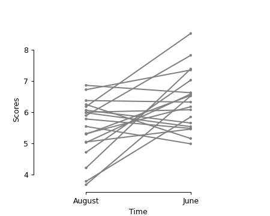
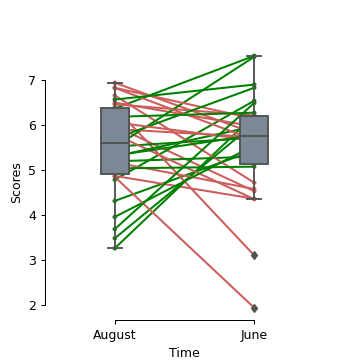

pingouin.plot_paired¶
-
pingouin.plot_paired(data=None, dv=None, within=None, subject=None, order=None, boxplot=True, boxplot_in_front=False, orient='v', figsize=4, 4, dpi=100, ax=None, colors=['green', 'grey', 'indianred'], pointplot_kwargs={'marker': '.', 'scale': 0.6}, boxplot_kwargs={'color': 'lightslategrey', 'width': 0.2})¶ Paired plot.
- Parameters
- data
pandas.DataFrame Long-format dataFrame.
- dvstring
Name of column containing the dependent variable.
- withinstring
Name of column containing the within-subject factor.
- subjectstring
Name of column containing the subject identifier.
- orderlist of str
List of values in
withinthat define the order of elements on the x-axis of the plot. If None, uses alphabetical order.- boxplotboolean
If True, add a boxplot to the paired lines using the
seaborn.boxplot()function.- boxplot_in_frontboolean
If True, the boxplot is plotted on the foreground (i.e. above the individual lines) and with a slight transparency. This makes the overall plot more readable when plotting a large numbers of subjects.
New in version 0.3.8.
- orientstring
Plot the boxplots vertically and the subjects on the x-axis if
orient='v'(default). Set toorient='h'to rotate the plot by by 90 degrees.New in version 0.3.9.
- figsizetuple
Figsize in inches
- dpiint
Resolution of the figure in dots per inches.
- axmatplotlib axes
Axis on which to draw the plot.
- colorslist of str
Line colors names. Default is green when value increases from A to B, indianred when value decreases from A to B and grey when the value is the same in both measurements.
- pointplot_kwargsdict
Dictionnary of optional arguments that are passed to the
seaborn.pointplot()function.- boxplot_kwargsdict
Dictionnary of optional arguments that are passed to the
seaborn.boxplot()function.
- data
- Returns
- axMatplotlib Axes instance
Returns the Axes object with the plot for further tweaking.
Notes
Data must be a long-format pandas DataFrame. Missing values are automatically removed using a strict listwise approach (= complete-case analysis).
Examples
Default paired plot:
>>> import pingouin as pg >>> df = pg.read_dataset('mixed_anova').query("Time != 'January'") >>> df = df.query("Group == 'Meditation' and Subject > 40") >>> ax = pg.plot_paired(data=df, dv='Scores', within='Time', ... subject='Subject', dpi=150)

Paired plot on an existing axis (no boxplot and uniform color):
>>> import pingouin as pg >>> import matplotlib.pyplot as plt >>> df = pg.read_dataset('mixed_anova').query("Time != 'January'") >>> df = df.query("Group == 'Meditation' and Subject > 40") >>> fig, ax1 = plt.subplots(1, 1, figsize=(5, 4)) >>> pg.plot_paired(data=df, dv='Scores', within='Time', ... subject='Subject', ax=ax1, boxplot=False, ... colors=['grey', 'grey', 'grey'])
Horizontal paired plot with three unique within-levels:
>>> import pingouin as pg >>> import matplotlib.pyplot as plt >>> df = pg.read_dataset('mixed_anova').query("Group == 'Meditation'") >>> # df = df.query("Group == 'Meditation' and Subject > 40") >>> pg.plot_paired(data=df, dv='Scores', within='Time', ... subject='Subject', orient='h')

With the boxplot on the foreground:
>>> import pingouin as pg >>> df = pg.read_dataset('mixed_anova').query("Time != 'January'") >>> df = df.query("Group == 'Control'") >>> ax = pg.plot_paired(data=df, dv='Scores', within='Time', ... subject='Subject', boxplot_in_front=True)
